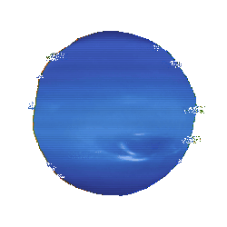
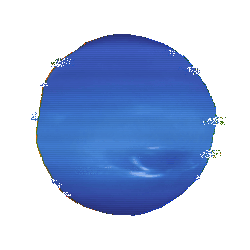

drew lapeer

drew lapeer
d i r e c t o r y
who is drew?
hello there! my name is DREW. i'm a second year astrophysics ph.d. student at the university of massachusetts amherst , among many other things. my origins lie in the midwest (michigan), but i now reside in western massachusetts. if i'm not spending too much time on science i'm likely reading, hiking, climbing, thrifting, or causing mischief. you can learn more about me here. if you'd like to get in touch with me, check out my contact page.
what is this website?
this website serves as a facet of my professional presence, and a personal archive of resources, ideas, and projects. on this site, you can find an overview of my research, learn about my interests, read my blog, and more! the directory to your left likely contains anything you may be interested in. if you'd like to learn more about this website, and its origin, you can read more here.
recent updates
aug 29th, 2025
my first paper at umass has finally been submitted for review!
aug 28th, 2025
i had a new astrobites article go up! you can find it here!
now...
reading ~ left hand of darkness by ursula k. le guin
listening ~ grace - jeff buckley
working ~ lots of code writing
enjoying ~ hiking
currently feeling...